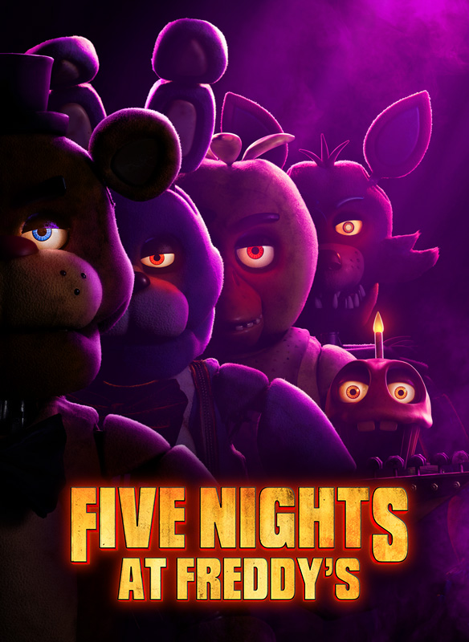
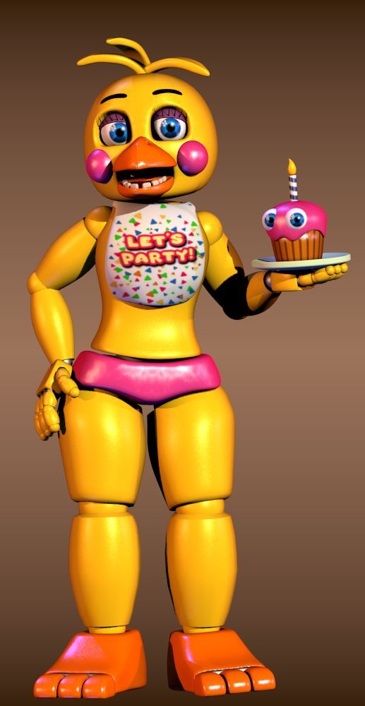

Los videojuegos son formas de entretenimiento digital que combinan imágenes, sonidos e interactividad para ofrecer experiencias variadas, desde aventuras épicas hasta desafíos de estrategia o habilidades. Se juegan en consolas, computadoras o dispositivos móviles, y permiten al jugador asumir distintos roles o cumplir objetivos en mundos virtuales. Además de divertir, pueden fomentar el trabajo en equipo, la creatividad y la toma de decisiones.
Minecraft es un videojuego de construcción y aventura en un mundo abierto compuesto por bloques, donde los jugadores pueden explorar, recolectar recursos, crear estructuras y sobrevivir a distintos peligros. Ofrece modos como supervivencia, donde hay que conseguir alimentos y defenderse de enemigos, y creativo, que permite construir libremente sin límites. Su estilo gráfico pixelado y su libertad de juego lo han convertido en uno de los títulos más populares y versátiles del mundo.


Five Nights at Freddy's (FNaF) es un videojuego de terror en el que el jugador asume el papel de un guardia de seguridad nocturno que debe sobrevivir cinco noches vigilando una pizzería habitada por animatrónicos espeluznantes. A través de cámaras de seguridad y puertas controladas remotamente, el jugador debe evitar ser atrapado por estas criaturas, que cobran vida durante la noche. Su atmósfera tensa, sustos inesperados y trama misteriosa lo han hecho muy popular entre los fanáticos del horror.
 Fernanfloo es un popular creador de contenido salvadoreño conocido por sus videos de humor, videojuegos y reacciones en YouTube. Su estilo enérgico, divertido y espontáneo lo convirtió en uno de los youtubers más seguidos de habla hispana. Ha jugado títulos como Five Nights at Freddy’s, GTA y Happy Wheels, entre otros, y también ha participado en proyectos como su propio videojuego y libros. Su carisma y autenticidad han sido clave para conectar con millones de seguidores en todo el mundo.